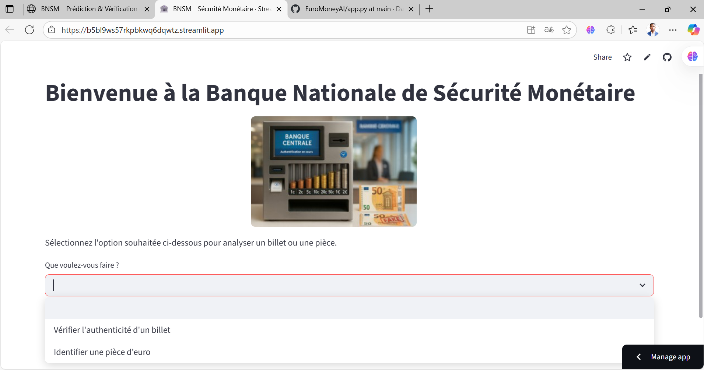
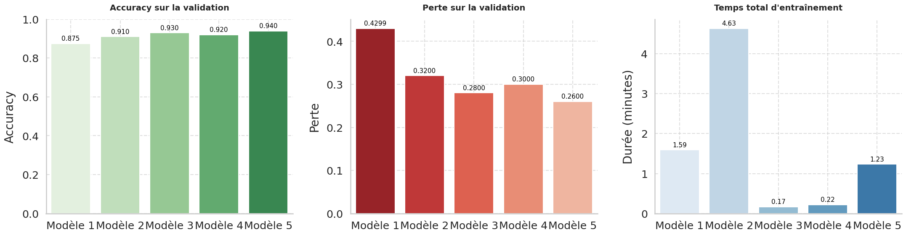
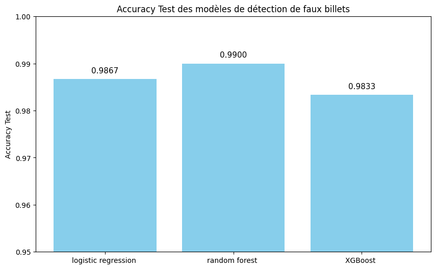

Reconnaissance de pièces d’euro & détection de faux billets Euro coin recognition & counterfeit banknote detection
Pour la Banque Nationale de la Sécurité Monétaire (BNSM), j’ai conçu une application IA unifiée capable d’identifier la valeur d’une pièce d’euro à partir d’une image et de détecter les faux billets via leurs caractéristiques dimensionnelles. L’app est déployée sous Streamlit (Cloud) et automatise le téléchargement des poids/modèles au démarrage. For the National Bank of Monetary Security (BNSM), I built a unified AI app that identifies the value of a euro coin from an image and detects counterfeit banknotes from dimensional features. The app runs on Streamlit (Cloud) and auto-downloads model weights at startup.

Application Streamlit – BNSM Sécurité Monétaire Streamlit application – BNSM Monetary Security

Le modèle final est basé sur VGG16 Fine-Tuning + Data Augmentation. The final model is based on VGG16 Fine-Tuning + Data Augmentation.
VGG16 → Flatten() → Dense → Dropout → Dense

Le modèle final est basé sur RandomForestClassifier. The final model is based on RandomForestClassifier.
StandardScaler() → RandomForestClassifier → Prédiction
Téléchargement automatique des poids depuis Google Drive, métriques en direct (confiance, latence), graphiques. Auto-download of model weights from Google Drive, live metrics (confidence, latency), charts.
Affichage immédiat de la valeur de la pièce ou du statut billet (Vrai/Faux) avec probabilités. Instant coin value or banknote status (Genuine/Fake) with probabilities.
Suivi du temps de prédiction, UX fluide pour usage guichets & agences. Measured prediction time, smooth UX for branches & ATMs.
Téléchargement contrôlé des modèles, traçabilité des versions, robustesse aux entrées. Controlled model downloads, version traceability, robust to inputs.